At eighteen, I moved far from home to Xiamen, an island city in southern China, for college. I started studying French from zero, added economics as a second major. My favorite college memory is assistant directing The Marriage of Figaro with twenty classmates. We did everything ourselves, and almost 200 people came to watch.
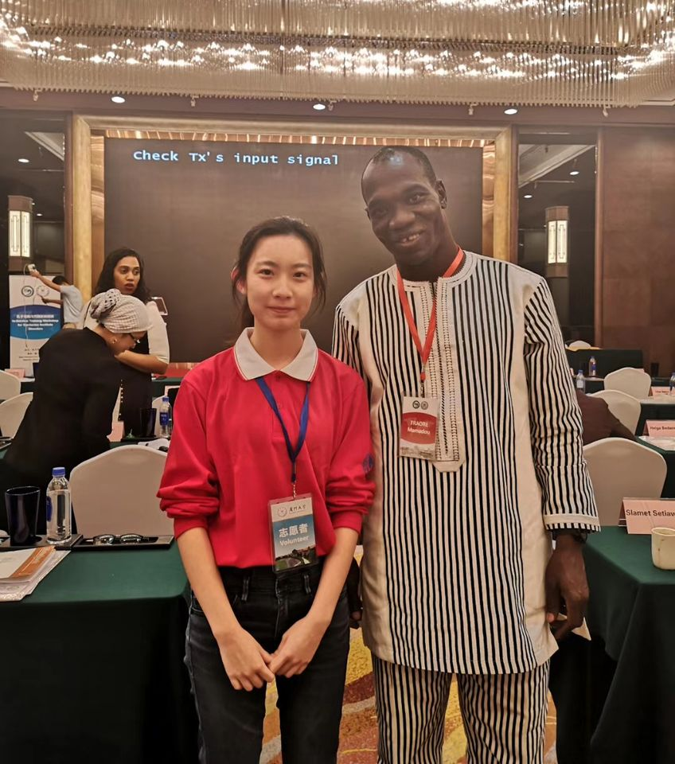
Volunteering
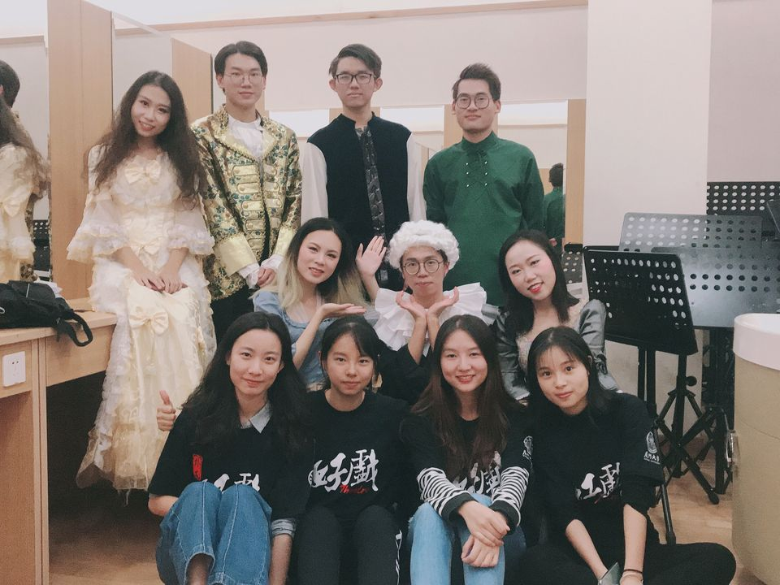
Backstage, Figaro
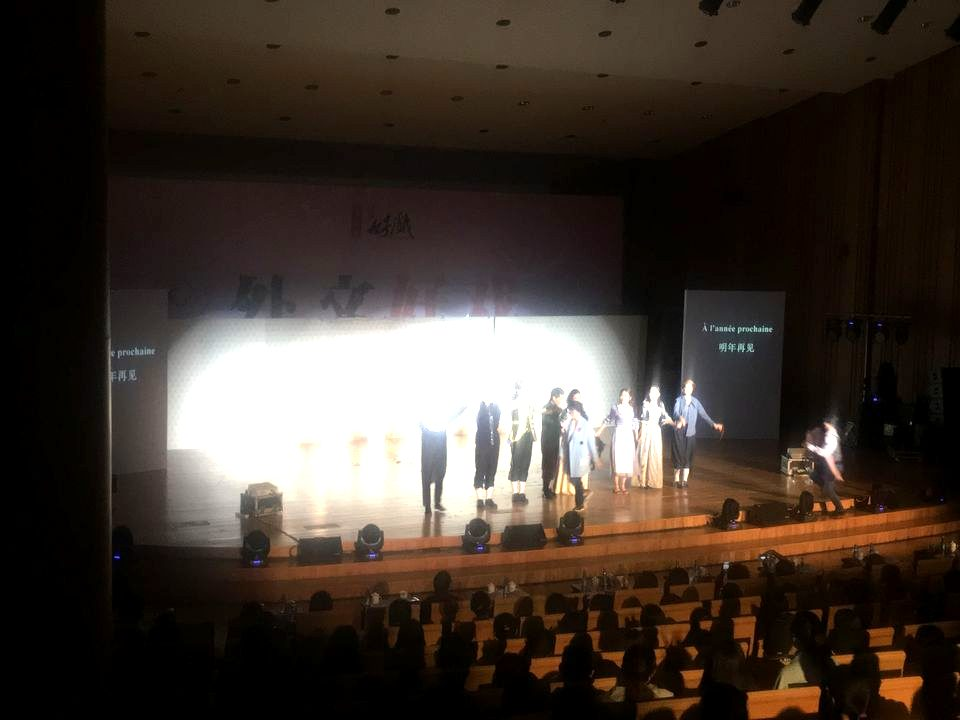
Curtain call
French took me to Paris, where I studied Finance and Management at ESCP. During breaks I interned at Kingsoft and a VC firm Source Code Capital. There I kept meeting founders with great ideas who were still figuring out how to build their teams and run the day-to-day. That's when I started caring as much about how companies run as about what they build.
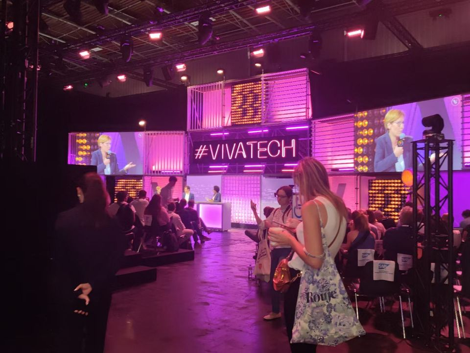
VivaTech, Paris
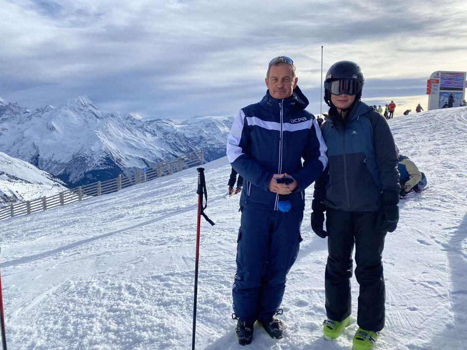
Skiing in the Alps
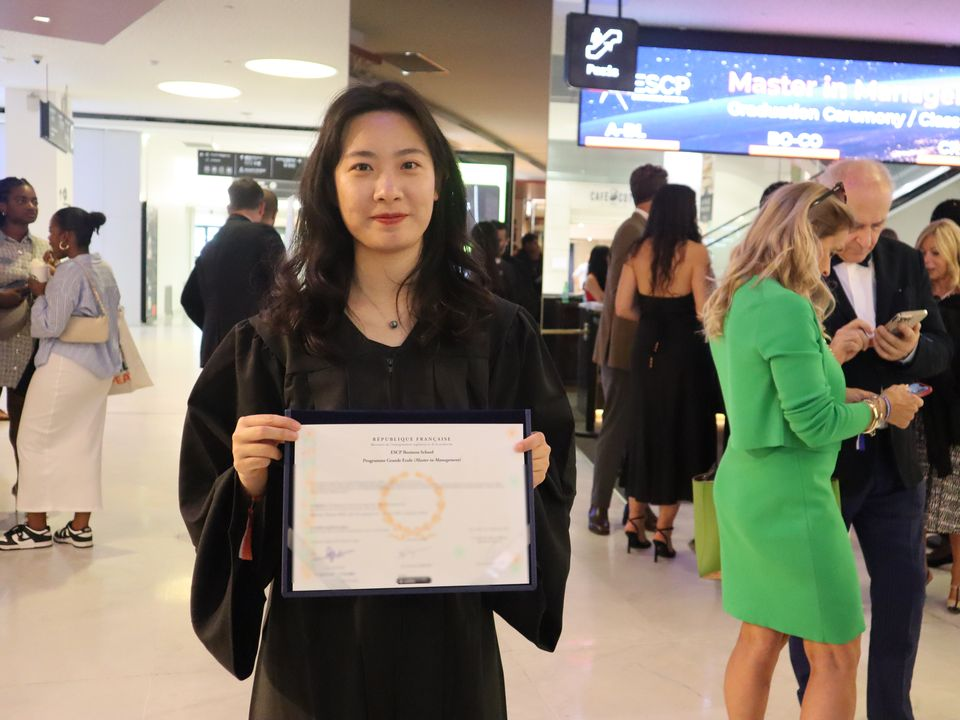
ESCP graduation
At Lenovo’s Digital Transformation Office, I inherited a Power BI system no one fully understood after its outside developer left. I rebuilt it piece by piece, then replaced monthly slide decks for 8 leaders with automated dashboards. Within a year I was promoted, and our team was named best team 3 years running. I learned that digital transformation isn’t just about technology. It’s about rethinking processes and aligning people around them.
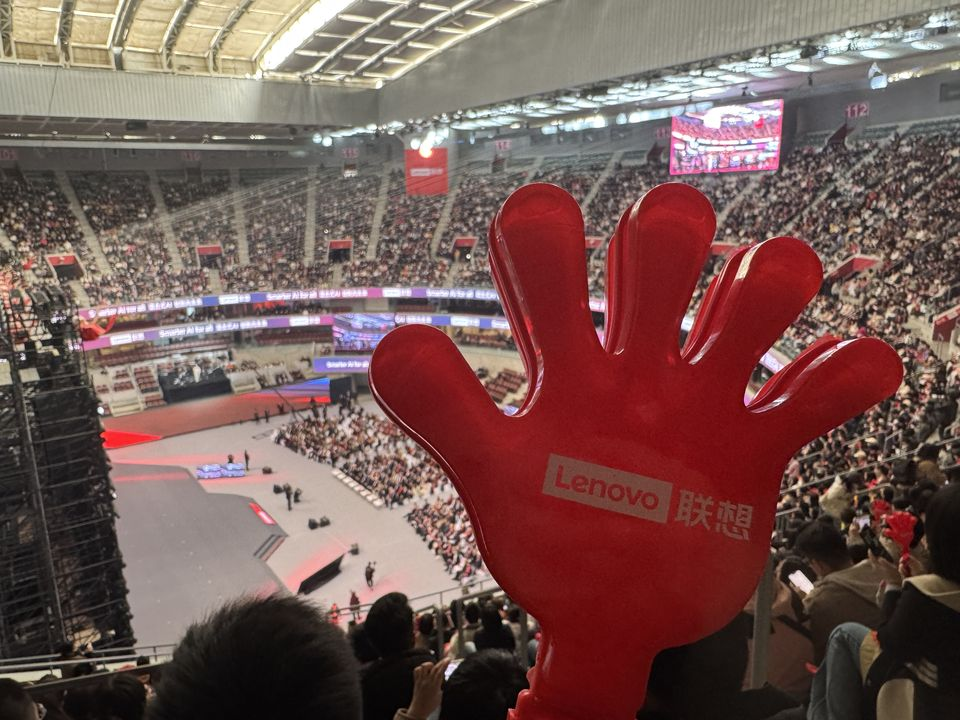
Lenovo FY kickoff
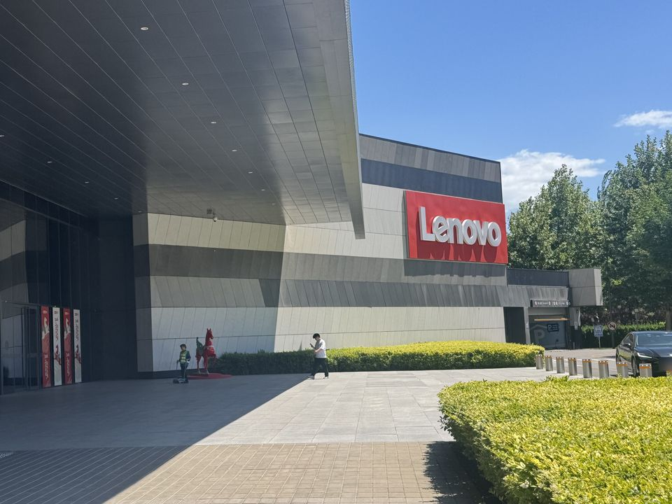
Lenovo HQ, Beijing
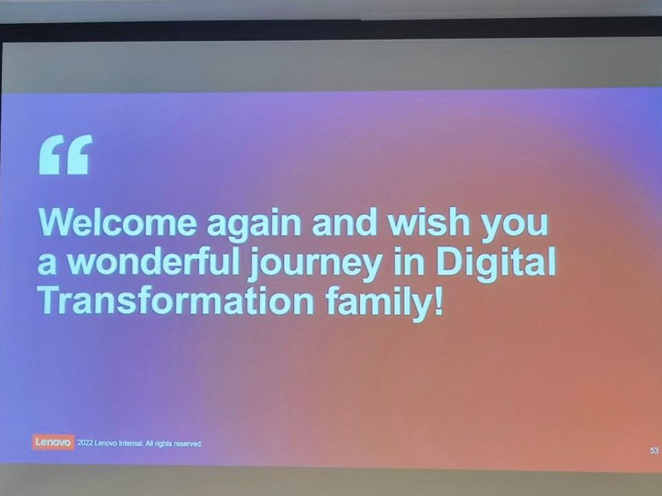
Joining the DT team
That lesson brought me to Seattle, where I'm now pursuing an MS in Business Analytics at the University of Washington Foster School of Business. I'm learning to use machine learning and AI, to help businesses make better decisions, and to be the person who understands both what these tools can do and what the business actually needs.
Six hand-built monthly decks, replaced by one self-serve Power BI app
Built one Power BI model and report template that now feeds six platform reports, so leaders see current portfolio spending any time instead of waiting for a monthly deck.
Our Digital Transformation project portfolio was managed in Anaplan, which was hitting its limits and costing a lot in licenses. As the business-side owner of the tool, I led the business side of the move to Microsoft Project Online (MSPO), from requirements to reporting, and made the process simpler along the way.
~$300Kyearly license cost saved once Anaplan was retired
18 → 12steps to set up a program, about 33% fewer
200+programs moved across 9 business groups
2 → 1tools for program and project management
The problem
The Anaplan model was running out of room and its license was about to expire, which left a short window to move. Years of staff turnover had also left the model's logic poorly documented, so few people knew how it worked. As the person who maintained the model and trained its users, I became the bridge between the old system and the new one.
What I did
Align requirements
Gathered requirements and mapped the old system
Collected requirements from PMs, program creators across 9 business groups, and finance
Documented the fields, logic and workflows of four Anaplan modules
Turned both into a requirements package that IT used to design and build MSPO
Simplify the process
Redesigned program setup
Removed the program resource demand input and the benefit split by BU and GEO, which took PMs time but few people used
Added a priority field that portfolio reviews needed
Before · 18
After · 12
Automate approvals
Designed and configured approval routing
Mapped every funding bucket to its finance approver
Set up the mapping so new programs carry their approver into MSPO automatically
BeforeEvery request went to one central finance team, which had to find the right approver by hand.
AfterEach program's funding bucket names its approver, so requests go straight to the right person.
Rebuild reporting
Rebuilt the data flow end to end
Mapped Anaplan fields to their new MSPO fields
Worked with the data team to switch the data platform's source from Anaplan to MSPO
Updated the data paths behind the leadership Power BI dashboard and checked the numbers end to end
How the system fits together
Before
Anaplanprograms and budgets
MSPOprojects
→
Data platform
→
Power BIleadership dashboard
After
MSPOprograms, projects and approvals in one place
→
UpdatedData platformnew source and field mapping
→
UpdatedPower BIdashboard repointed to new data
Every step in the chain changed, and I worked on each one, from the source system to the dashboard.
Outcome
Saved ~$300K a year in license cost once Anaplan was retired
Automated Portfolio Cash Reporting in Power BI Case study
Every month our team reported program spending to the leaders of six business platforms, one hand-built PowerPoint deck per platform. I replaced the six decks with self-serve Power BI reports that leaders can open any time, each showing only that platform's data.
Portfolio cash overview · Power BI~10 hrs/week saved
Sample data for demo purposes only6 platforms
TeamLenovo Digital Transformation Office
AudienceLeaders of 6 business platforms
Scope200+ projects in the portfolio
ToolsPower BI, DAX, Power BI Apps
~10 hrsof repetitive reporting work saved each week
6 → 1hand-built decks replaced by one Power BI app
1data model and set of logic behind all six reports
200+projects covered, with data current whenever leaders open it
The problem
Every month, our team reported program spending to the leaders of six business platforms. The portfolio covered 200+ projects, and each platform got its own PowerPoint deck, built by hand. We pulled data from Excel files on SharePoint, ran the calculations, flagged issues and pasted the results into slides. All six decks used the same data and the same logic, so most of the work was repetition. The numbers were also out of date by the time leaders saw them.
Objective
Replace the six manual decks with self-serve reports that leaders can open at any time, and make sure each platform sees only its own data.
What I did
Build the model
Connected the source and built one data model
Connected Power BI directly to the SharePoint Excel source
Built one data model with DAX measures for approved budget, registered amount, actual spending and execution rate
Flag issues
Added automatic flags for problems
Over- or under-execution against budget
Projects still open after their exit date
Charges posted after a project was closed
Design the report
Designed a 4-page report
A program-level cash overview
A project drill-down with filters by program, status and PM
A page tracking projects that haven't closed
A page monitoring charges posted after closure
Scale and share
One template, six reports, one app
Built one report as a template, then duplicated it for each platform with a platform-level filter, creating six reports in one workspace from the same model and logic
Published the six reports as a single Power BI app with a separate audience for each platform, so each leader sees only their own platform's report
The report
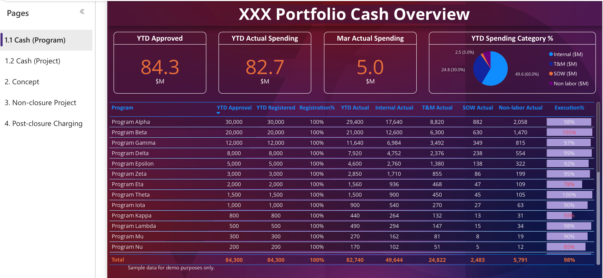
Page 1.1, program-level cash overview. Sample data for demo purposes only.
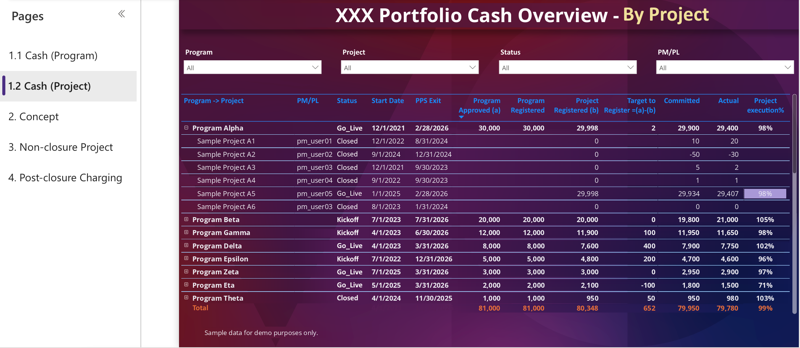
Page 1.2, project drill-down with filters by program, project, status and PM. Sample data for demo purposes only.
Outcome
Saved about 10 hours per week of repetitive reporting work
Leaders across 6 platforms now open one link and get current, interactive data instead of waiting for a monthly deck
One model and one set of logic now drive all six reports, so numbers are consistent across platforms
Predicting Checkout Spend to Target Free Shipping Case study · UW Business Analytics
A regression model that predicts each shopper's checkout spend, so free shipping goes only to those likely to spend $150 or more. The final Lasso model cut typical prediction error from $42 to $22 using just 7 of 103 inputs.
Typical prediction error per shopperLasso model
Baseline$42
Final Lasso$22
Inputs kept: 7 of 103
72%offers to real $150+ shoppers
$104wasted-offer cost, lowest tested
1,500checkout sessions
DecisionWho gets free shipping, which costs $8 per order
Data1,500 checkout sessions, 15 candidate features
MethodsOLS, cross-validation, Ridge, Lasso
ToolsPython, pandas, scikit-learn
$42 → $22typical prediction error per shopper
7 of 103inputs kept by the final model
72%of offers went to shoppers who really spent $150+
$104wasted-offer cost, lowest of all models tested
OmniShop wanted to spend its free-shipping budget only on shoppers who would spend at least $150. Finance assumed every shopper spends the average of about $113, a guess that is off by about $42 for a typical shopper and cannot tell a $60 shopper from a $180 one. I turned this into a regression problem: predict each shopper's spend in dollars, then use the prediction to decide who gets the offer.
What I did
Set the bar
Started from the simplest guess
Held back 30% of sessions as a test set and kept it untouched until the final check
Used the average spend as a baseline, then fit OLS on the 4 features the team trusted most
Check the errors
Found 8 orders skewing every prediction
A residual plot showed 8 VIP orders of $1,000+ pulling predictions up by about $9
Since the VIP team already serves these shoppers, I modeled standard shoppers only, which halved the error and lifted R² from 0.10 to 0.73
Avoid overfitting
Showed that more features made it worse
Added all 15 features one group at a time and compared training error with 5-fold cross-validation
Error on new shoppers was lowest at 4 inputs and rose as noise like region and session hour came in
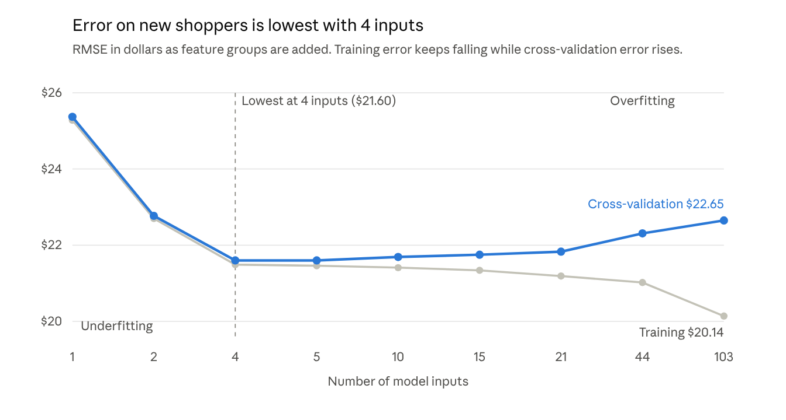
Training error kept falling, but error on new shoppers bottomed out at 4 inputs.
Regularize
Let Lasso pick the real drivers
Tuned Ridge and Lasso inside a pipeline so scaling and encoding never leaked test data
Lasso zeroed out 96 of 103 inputs and kept the same top drivers the team trusted: past order value, recommended items, pages viewed and discount
It also dropped session length, which plain OLS gave a confusing negative weight because it moves with pages viewed
Test in dollars
Turned predictions into a business decision
Applied each model to the $150 rule on 448 test shoppers, 54 of whom really spent $150+, and counted wasted offers, missed high spenders and cost
Model
Offers
Wasted
Missed
Wasted cost
Lasso
47
13
20
$104
Full OLS
52
15
17
$120
Trained with VIP orders
60
21
15
$168
Recommendation
I recommended Lasso. It is nearly as accurate as the best model, uses only 7 inputs a revenue leader can understand, and wasted the least money. The trade-off is that it missed 20 of 54 high spenders, so I proposed logging every shopper after launch, tracking near-misses just under $150, and running a small holdout group to measure whether free shipping actually raises spend.
From the BUS AN 517 (ML/AI Methods and Applications) case study in the UW Foster MSBA. OmniShop is fictional and the data is synthetic; the analysis and recommendation are my own.
Factory Capacity and Inventory Strategy Case study · UW Business Analytics
Littlefield is an online simulation of an electronics factory with three workstations. Our team took over on day 50 and made every decision on machines, delivery contracts and kit inventory until the game ended on day 268. Using queueing, inventory and newsvendor models, we finished No. 1 in the class with $2,436,166 in cash.
Littlefield simulation · final resultsDay 268
#1Class ranking$2,436,166 cash
Lead time per job (days)
Day 503.7
After fixes0.43
0 jobs waiting for kits, days 55–267Excel
TeamGroup 4, MSBA classmates
DecisionsMachines, contract, reorder point, order size
By day 50 all three stations were running near full load, a 36-job backlog had built up, and lead time had grown to 3.7 days. That locked the factory into the lowest-paying contract, since higher contracts pay more only when jobs ship within about half a day. The task was to fix capacity, move to a better contract without paying late penalties, keep kits in stock, and stop buying before settings froze on day 218.
What we did
Size capacity
Chose the machine mix with a queueing model
Estimated demand (12.24 jobs a day) and each machine's service rate from the first 50 days of data
Modeled every station as an M/M/c queue, used Little's law to turn queues into waiting time, and priced each setup by the revenue its lead time would earn
Picked 5-2-2: the 5th board-stuffing machine cut the chance of a job waiting over half a day from 3.8% to 0.2%, while a 6th did not cover its $90,000 cost
Machines
S1 load
Wait > 0.5 day
Lead time
Net revenue
3-1-1
95%
65%
4.0 days
$1.96M
4-2-2
71%
3.8%
0.47 days
$2.73M
5-2-2
57%
0.2%
0.43 days
$2.79M
6-2-2
47%
0.01%
0.42 days
$2.72M
Raise the contract
Moved to the top contract in two steps
Added machines on day 50 to clear the backlog, since new orders queued behind it and would have been late on a better contract
Switched to Contract 2 on day 55 as a low-risk test, then to Contract 3 on day 62.8 once lead time held near 0.4 days
Set a fallback rule to return to Contract 2 if lead time stayed above 0.6 days for two days, which was never needed
Keep kits in stock
Set the reorder point and order size
Set the reorder point at 4,500 kits for a 99.99% service level over the 4-day supplier lead time
Ordered 14,400 kits instead of the 23,160-kit EOQ, which kept $232,600 less cash tied up per order for only about $7 a day in extra cost
Plan the end game
Sized the final order with a newsvendor model
Balanced a $650 loss per job short against $600 of wasted kits per job over, for a critical fractile of 0.52
Averaged two demand estimates to place one final order of 21,840 kits, then set the reorder point to 0 before the day 218 lock
Retired one board-stuffing machine for $10,000, since 4-2-2 still had enough capacity for Contract 3
Outcome
We finished with $2,436,166, first in the class. The kits lasted until day 267, when new jobs could no longer finish anyway. Three choices drove the result: reaching Contract 3 early, which earned about $1.1M more than the same jobs on the base contract; never letting a job wait for kits; and stopping purchases before the lock.
EV Adoption Across Washington State Case study · UW Business Analytics
A team analysis of about 290,000 registered electric vehicles in Washington, asking which counties are adopting fastest, what kinds of EVs they buy, and whether income plays a role. I handled the data cleaning across four tables in MySQL and built the county-level analysis of electric share and range.
EV share of 2025 new registrations~290K records
Pierce32%
Clark32%
Snohomish32%
King30%
Spokane22%
Kitsap21%
Top counties · WA DOL registryMySQL
TeamFive MSBA classmates
DataWA DOL registry, county income, EV model specs
Utilities, automakers and policymakers all need to know where EV adoption is growing and what drives it, to plan grid capacity, stock the right models and target incentives. The team set out to answer three questions: which Washington counties are growing EV adoption fastest, whether buyers choose high-range models or affordable ones, and whether clean-fuel eligibility and household income relate to adoption.
What I did
Clean the data
Made four tables join cleanly
Set unreported electric range of 0 to NULL, so missing values no longer pulled averages down
Kept only the latest re-registration per vehicle with ROW_NUMBER(), and dropped non-WA and blank-county rows
Trimmed county names, stripped commas from income figures, and aligned the year key so every table joined on county
Pre-aggregated model specs to one row per brand to avoid double counting on the join, and converted range from km to miles
Set the scope
Kept the comparisons reliable
Limited the analysis to model years 2011–2025, the only span with complete registration data
Used 2022–2023 for growth, since newer vehicles were not all registered yet, and required at least 20 EVs per county so small counties would not show misleading growth rates
Grouped vehicles into short, mid and long range tiers, with unknown range kept as its own group
Analyze by county
Compared electric share and range across counties
Wrote the queries for battery-electric share and average battery-electric range by county, which became the two county maps
Found that cities go most electric, above 80% in Snohomish, while coastal and remote counties such as Pacific (64%) lean on plug-in hybrids
Found that inland counties buy the longest-range EVs, above 220 miles on average, while islands and the coast sit at 160–180 miles
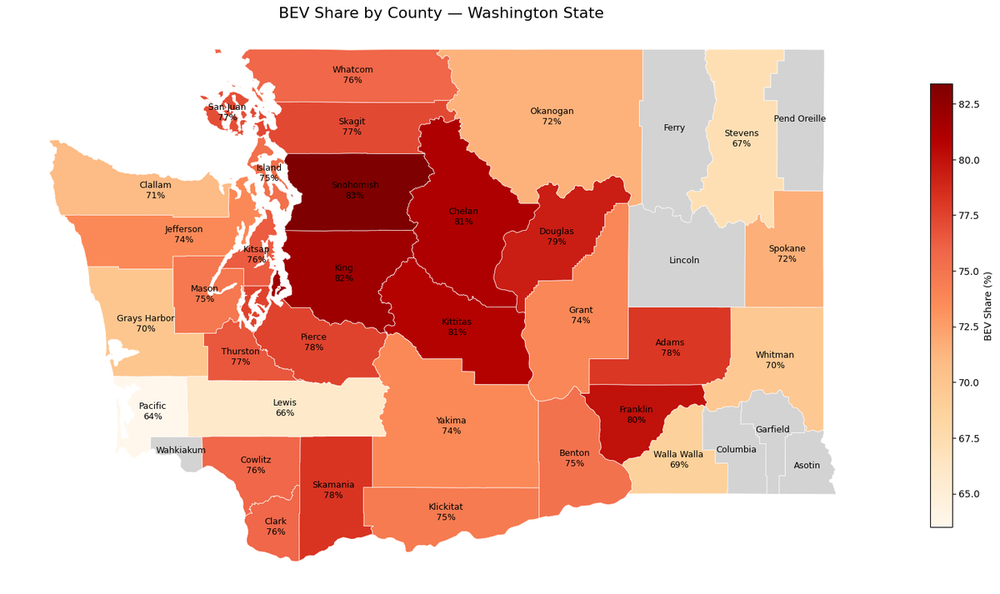
Battery-electric share of EVs by county. Dense urban counties lead; coastal and remote counties rely more on hybrids.
What the team found
Volume is not adoption. King County has the most EVs but ranks 4th by adoption rate; Pierce, Clark and Snohomish each passed 30% of 2025 registrations.
Growth is moving to smaller counties. Grays Harbor, Douglas and Pacific grew fastest from 2022 to 2023.
Charging access shapes the choice. Cities with dense chargers and short trips buy pure electric; rural drivers keep a hybrid or buy longer range.
Income is a weak signal. It barely relates to clean-fuel eligibility (r ≈ −0.29) or range, and lower-income counties with high adoption are still led by Tesla.
The market is concentrated. Tesla has about six times the registrations of the next brand, and 41.8% of EVs sit in the 300–350 mile band.
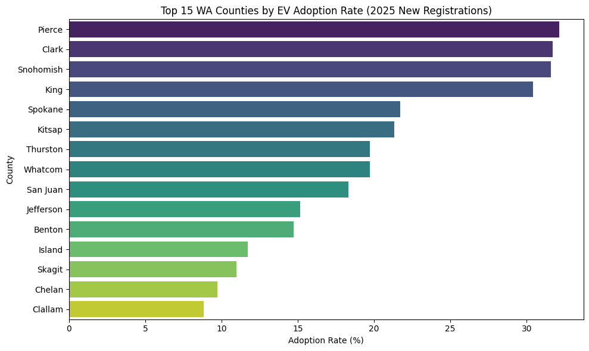
Top 15 counties by EV share of 2025 new registrations.